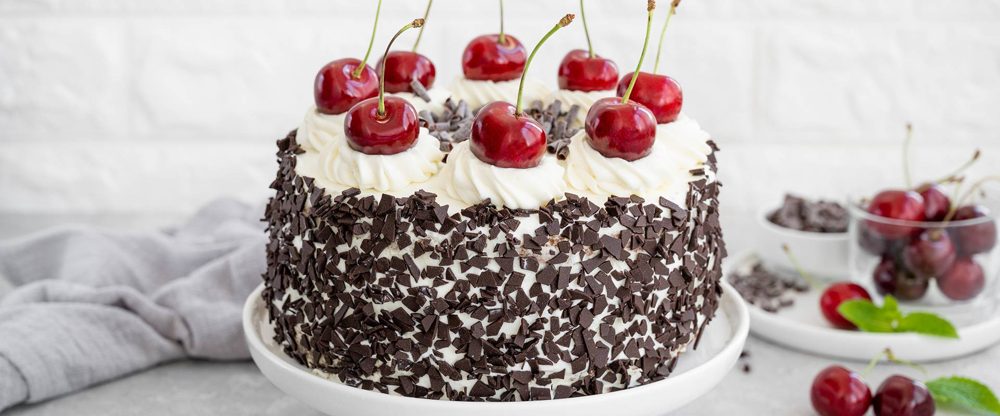

Feketeerdő torta

Annyi tudunk, hogy a sütemény talán 1930 tavaszán a Café Walz-ban született, Tübingenben. Állítólag egy Erwin Hildenbrand nevű úr találta fel, aki korábban éveken át dolgozott a Fekete-erdőben, s valószínűleg az ottani benyomások nyomán készítette s keresztelte el a süteményt.
Hozzávalók
Piskótához
- 6 db tojás
- 3 ek víz
- 8 ek cukor
- 1 csomag vaníliás cukor
- 5 evőkanál finomliszt
- 2 evőkanál étkezési keményítő
- 2 ek cukrozatlan kakaópor
- 0.5 csomag sütőpor
Meggyes krémhez
- 35 dkg meggybefőtt (magozott)
- 1 csomag vaníliás pudingpor
- 1 ek cukor
- 1 csipet fahéj
A tetejére
- 3.5 dl habtejszín
- 1 ek csokoládéforgács
Elkészítés
- Piskótát sütünk: 6tojássárgáját felverünk (kézi robotgéppel) 3 ek vízzel és 4 ek cukorral. 6 tojásfehérjét felverünk (állványos robotgéppel) 1 csipet sóval és 4 ek cukorral + 1 vaníliás cukorral. Egy tálba teszünk fél cs sütőport, 5 ek lisztet, 2 ek étkezési keményítőt, 2 ek keserű kakaóport; összekeverjük.
- A lisztes alapanyagot hozzászitáljuk a tojássárgájás krémhez, nagyjából elkeverjük. Hozzáadjuk a felvert tojásfehérje 1/4 részét, és elkeverjük kézi robotgéppel. A többi tojáshabot már egy műanyag fakanállal, kézzel keverjük óvatosan hozzá.
- Kerek tortaforma aljába vágjunk sütőpapírt, és öntsük bele a piskótamasszát. 220 fokos, előmelegített sütőbe tegyük, és 5 perc múlva vegyük le a hőfokot 180 fokra. Tűpróbáig süssük
- A meggyet lecsepegtetjük szűrőn, felfogjuk a levét, és főzünk belőle pudingot. (Tej helyett befőttlevet használunk, de ugyanúgy készül, mint a mezei puding.) Összekeverjük a meggyel és a fahéjjal, hűlni hagyjuk.
- A kihűlt piskótát 3 felé vágjuk, ésbetöltjük a tölteléket, méghozzá úgy, hogy az alsó lapra belülről kifelé haladva körökben tesszük a meggytölteléket, és a tejszínt, a 2. lapra pedig pont fordítva, a tejszínnel kezdek, és kifelé haladva meggytölteléket teszek, szintén kör alakban (mint a céltábla). Ezt azért így, hogy szeletelésnél sakktábla mintázatot adjon ki. A meggyeset kiskanállal rakosgassuk rá, a tejszínt meg habzsákból is nyomhatjuk. (Kb. 1,5 dl felvert tejszín ment bele. Plusz még kellett a díszítéséhez is kb. 2 dl-nyi.)
- A szélét bevonjuk csokidarával ("egérkakival") :D, mégpedig oly módon, hogy fogjuk bal tenyerünkkel a tortát az aljánál, egy tálca fölé tartjuk alacsonyan, és egy másik tálból pedig finoman dobáljuk rá a jobb kezünkkel a csokidarát. Ami lepotyogott, azt felfogta a tálca. Összegyűjtjük, és ismét szórjuk az oldalára, közben forgassuk, amíg körbe nem ér.
- A tetejét osszuk 12 részre, habrózsákat nyomjunk rá. 12 szem meggyet vegyünk ki a befőttesüvegből, jól csepegtessük le, több szalvéta közé tegyük, forgassuk, hogy felszívja a nedvességet róla (különben beszínezné maga alatt a tejszínhabot, és az nem mutatna valami jól).
- A tetejére:sűrűre olvasszunk csokit (kevéske olajat tegyünk csak hozzá), majd egy fémtepsibe simítsuk 1-2 mm vastagon, és dugjuk be a hűtőbe dermedni. Miután megkeményedett, egy spaklit toljunk végig rajta, és ilyen érdekes alakú csokidarabok születnek! :)
Csupa csokitorta
A csokoládétorta egy általános desszerttorta, melyet különböző alkalmakkor, születésnapi bulin, esküvőn szokás felszolgálni, de a legtöbb cukrászdában is fogyasztható. Legfontosabb összetevője a csokoládé. Számos eltérő típusú csokoládétorta létezik, ami a hozzávalók változtatásától és a csokoládé ízétől függ. Nem ritka a rum és méz felhasználásával készült csokoládétorta.
Hozzávalók
Piskótához
- 6 db tojás
- 14 dkg cukor
- 25 ml víz
- 1 csipet só
- 12 dkg finomliszt
- 2 dkg cukrozatlan kakaópor
- 1 csomag sütőpor
Krémhez
- 6 dl habtejszín
- 20 dkg étcsokoládé
- 3 dkg porcukor
Díszítéshez
- 10 dkg fehér csokoládé
- 10 dkg tejcsokoládé
- 10 dkg étcsokoládé
Elkészítés
- A 22 cm-es tortaforma aljába sütőpapírt teszünk, az oldalát hagyjuk szabadon, így kevésbé esik majd össze a piskóta.
- A tojássárgáját felverjük a cukor felével és a vízzel.
- A tojásfehérjét egy csipet sóval félkeményre verjük, majd hozzáadjuk a maradék cukrot, és addig keverjük tovább a robotgéppel, még kemény hab nem lesz.
- A lisztet, a kakaót és a sütőport beleszitáljuk a sárgájába, hozzáadunk egy kanál fehérjét, és azzal együtt kikeverjük.
- Fokozatosan adjuk hozzá a fehérjehabot, az első pár adag esetén nem baj, ha törik, csomómentesre keverjük.
- Előmelegített sütőben alsó+felső beállításon, légkeverés nélkül 180 fokon 30 percig, majd 170 fokon még 5 percig sütjük.
- A tejszínt és a csokit egy lábosban felolvasztjuk, mielőtt felforrna, levesszük a tűzről, és félretesszük hűlni.
- Miután kihűlt, beleszitáljuk a porcukrot, és habosra verjük a robotgéppel.
- A három részre vágott piskótát megtöltjük krémmel, megkenjük a tetejét és az oldalát is, de a krém körülbelül negyedét meghagyjuk a formázáshoz. A tortát és a krémet is hűtőbe tesszük.
- A háromféle csokival ugyanaz a teendő, külön-külön. Felolvasztjuk a csokoládét mikróban vagy vízgőz felett.
- Kiöntjük egy sütőpapírra, majd egy késsel vékonyra kenjük téglalap alakban. A téglalap rövidebbik oldala körülbelül a torta magasságának 1,5-2-szerese legyen. Ezután egy másik sütőpapírral lefedjük az olvadt csokit, és feltekerjük, nem kell, hogy szoros legyen, a lényeg, hogy ne folyjon ki, miközben tekerjük. A három gurigát is hűtőbe tesszük.
- Legalább 4 órát pihentetjük a hűtőben, ha még nem keményedett meg a krém és a csoki, akkor tovább. A maradék, most már kemény krémmel tortaformájúra formázzuk a tortát.
- A csokigurigákat bátran kitekerjük, az a lényeg, hogy 1-2-3 cm-es oszlopokra törjön. A szép csokidarabokkal körberakjuk a tortát, a maradék összetört csokidarabokkal ízlés szerint a torta közepét díszítjük.
- Tálalásig visszatesszük a hűtőbe, nyáron sajnos gyorsan olvad.
Áfonyás sajttorta
A sajttortát sokan egynek gondolják a New York Cheesecake-kel, és ebből azt a következtetést vonják le, hogy a legelső sajttorta is New York-i illetőségű volt. Nos, ők tévednek. Hihetetlennek tűnik, de igaz, hogy ezt a trendi desszertet már az ókori görögök is ismerték.
Hozzávalók
Az alaphoz
- 30 dkg zabkeksz (finomra őrölve)
- 14 dkg vaj (olvasztott)
Töltelékhez
- 15 dkg áfonya
- 3 evőkanál víz
- 25 dkg barna cukor
- 1 csapott ek étkezési keményítő
- 50 dkg mascarpone
- 200 ml tejföl
- 3 db tojás
- 4 evőkanál finomliszt
- 2 teáskanál vanília kivonat
Elkészítés
- A sütőt előmelegítjük (villany 200 fok, légkeverős 180 fok).
- Egy 20x30 cm-es tepsit béleljünk ki sütőpapírral.
- A kekszet az olvasztott vajjal keverjük össze, és egyenletesen terítsük a tepsibe. Nyomjuk le jó erősen egy kanál hátával.
- Süssük 10 percig, aztán hagyjuk kihűlni.
- Az áfonyát 2 evőkanál vízzel és 1,5 dkg cukorral tegyük fel főni, lassú tűzön. Időnként keverjünk bele. Forraljuk 2 percig.
- 1 evőkanál vízbe keverjük el az étkezési keményítőt, és adjuk az áfonyához. Amint visszaforr, vegyük le, és hűtsük ki.
- A mascarponéhez keverjük hozzá a többi hozzávalót.
- A krémsajtos keverék felét öntsük a kekszalapra, és kanállal pöttyözzük rá az áfonyaszósz felét. Mehet rá a krém másik fele. Csorgassuk rá a maradék áfonyaszószt, és egy kanál végével húzzunk bele örvényeket.
- Süssük a tortát 10 percig (180 fokon villany), majd vegyük le a hőfokot (110 fok, villany), és süssük 30 percig. Kapcsoljuk le a sütőt, de a tortát hagyjuk a sütőben 1 órán át, aztán nyissuk ki a sütő ajtaját, de a torta maradjon benne még 1 órát. Végül szobahőmérsékleten hagyjuk teljesen kihűlni.
- Tegyük hűtőbe 3 órára.